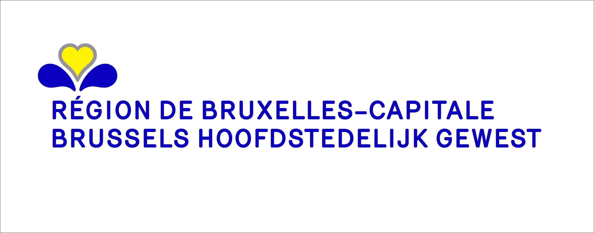
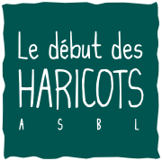

<!DOCTYPE html>
<html lang="en" dir="ltr">

<head>
  <meta charset="utf-8">
  <meta name="description" content="site potage-toit" />
  <meta name="viewport" content="width=device-width, initial-scale=1">
  <meta name="theme-color" content="#fdfdfd" />
  <title>Potage-Toit</title>
  <link rel="stylesheet" href="https://stackpath.bootstrapcdn.com/bootstrap/4.1.1/css/bootstrap.min.css" integrity="sha384-WskhaSGFgHYWDcbwN70/dfYBj47jz9qbsMId/iRN3ewGhXQFZCSftd1LZCfmhktB" crossorigin="anonymous">
  <link rel="stylesheet" href="../css/style.css">
  <!-- favicon -->
  <link rel="icon" type="image/png" href="../images/favicon.png">
</head>

<body>
  <!-- Footer -->
  <footer class="container-fluid text-center">
    <div class="row  text-center border-top border-secondary">
      <div class="footer-col col-sm-4 col-md-4 col-lg-4">
        <h6>Adresse : </h6>
        <p>Koninkijke Biliothèque Royale <br> bd de l’empereur 4 <br> 1000 Bruxelles <br> accès via la cafétéria au 5ème étage</p>
      </div>
      <div class="footer-col col-sm-4 col-md-4 col-lg-4">
        <h6>Permanence : </h6>
        <p>Du lundi au vendredi de 10h à 15h</p>
      </div>
      <div class="footer-col col-sm-4 col-md-4 col-lg-4">
        <h6>Avec le soutien de : </h6>
        
        
      </div>
      <p class="border-top border-secondary"></p>
      <div class="social-media">
        <i class="footer-social fab fa-facebook-f" aria-hidden="true"></i>
        <i class="footer-social fab fa-twitter" aria-hidden="true"></i>
        <i class="footer-social fab fa-linkedin" aria-hidden="true"></i>
        <i class="footer-social fab fa-youtube" aria-hidden="true"></i>
        <i class="footer-social fab fa-google-plus-g" aria-hidden="true"></i>
      </div>

  </footer>
</body>

</html>